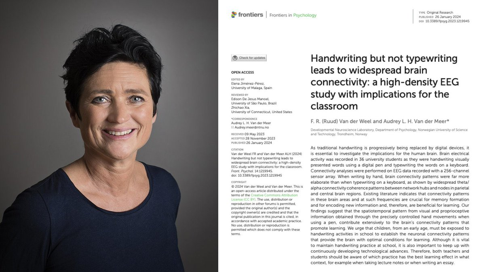

時璃風医詩🌈🏳️🌈
@hagishigure
孩子们我们有更老派的方法瞪眼法。
写什么写，看一眼然后在脑子里面慢慢翻阅就行了。

Berryxia.AI
@berryxia
兄弟们，一个挪威神经科学家花了整整20年，就为了证明一件事：
手写笔记和打字，在大脑里是完全不同的两件事。
她叫Audrey van der Meer，在Trondheim经营脑科学研究实验室。
2024年她在Frontiers in Psychology上发的那篇论文，直接把争议画上了句号。 https://t.co/g1erdw6dpd https://t.co/U35u7FzBsN